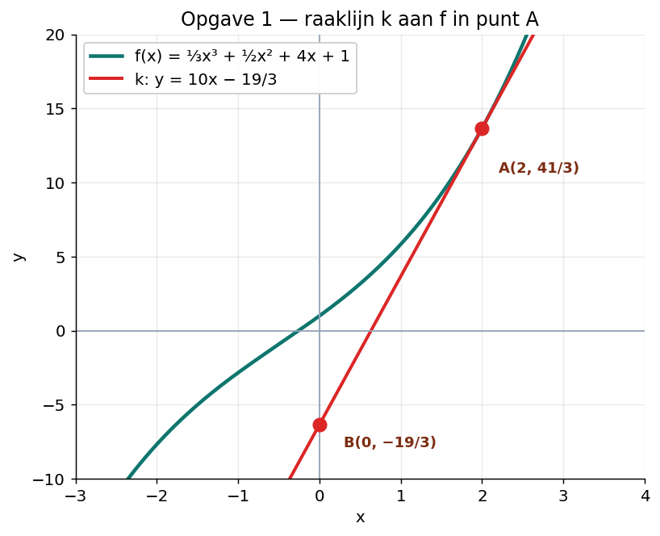
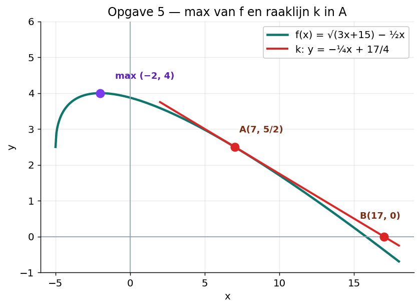
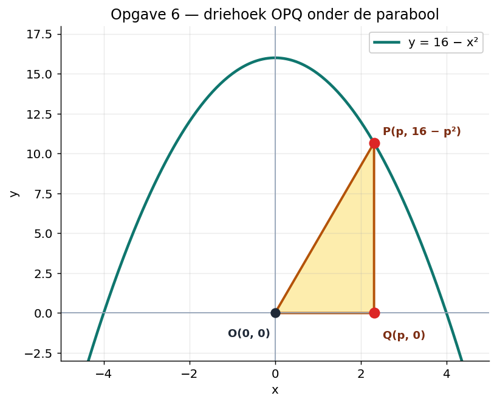

60 minuten · zes opgaven · klaarmaken voor de toets
Gegeven is de functie f(x) = ⅓x³ + ½x² + 4x + 1.

a)
Lijn k: y = 10x + b. Vul A(2, 41/3) in:
B(0, −19/3).
b) Los op f'(x) = 4:
f(0) = 0 + 0 + 0 + 1 = 1, dus C(0, 1).
f(−1) = ⅓·(−1) + ½·1 + 4·(−1) + 1 = −⅓ + ½ − 4 + 1 = −2/6 + 3/6 − 18/6 = −17/6, dus D(−1, −17/6).
C(0, 1) en D(−1, −17/6).
Bereken exact de extreme waarden van f(x) = x³ − 3x² + 2.
Stel f'(x) = 0:
De grafiek is een derdegraads functie met positieve leidende coëfficiënt: hij stijgt voor x < 0, daalt tussen 0 en 2, en stijgt weer na 2. Dus x = 0 is een maximum, x = 2 is een minimum.
max f(0) = 2 en min f(2) = −2.
Differentieer de volgende functies. Schrijf het antwoord netjes in breukvorm of wortelvorm (geen negatieve of gebroken exponenten).
a) Schrijf f(x) = 3x−4.
b) Herschrijf eerst:
c) Werk de haakjes eerst uit:
Differentieer met de kettingregel. Vergeet de binnenste afgeleide (·a) niet.
a) Macht naar voren, exponent één lager, binnenste afgeleide ·6:
b) Schrijf g(x) = 5·(2x − 3)−4:
c) Schrijf √(3x − 4) = (3x − 4)1/2:
Gegeven is de functie f(x) = √(3x + 15) − ½x.

a) Schrijf f(x) = (3x + 15)1/2 − ½x.
Stel f'(x) = 0:
max f(−2) = 4.
b)
Lijn k: y = −¼x + b. Vul A(7, 5/2) in:
k: y = −¼x + 17/4. Snijpunt met x-as: y = 0:
B(17, 0).
Gegeven is de parabool y = 16 − x². Op de parabool ligt het punt P(p, yP) met 0 < p < 4. Op de x-as ligt het punt Q(p, 0). De driehoek heeft hoekpunten O(0, 0), P en Q.

a) Driehoek ΔOPQ: basis OQ = p (op x-as), hoogte = yP = 16 − p².
b)
Stel A'(p) = 0:
(Negatieve waarde valt af omdat 0 < p < 4.)
c) Bereken A bij p = 4/√3: